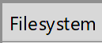

Сборка FreeType
FreeType - это зависимость HarfBuzz-a. Он будет построен вместе с прочими зависимостями HarfBuzz-a.
Наши изменения во FreeType
Patch для x64 windows
(258824f2ba2a3a1cd69c3ad68112283f8c885f09)
Мы используем FreeType через SharpFont, который является частью DynamicFont-а.
С этим есть опредёлённые проблемы. SharpFont маршалит long как IntPtr. Это прекрасно работает в сборках движка под Windows(x86), MacOS(x64), iOS(x64), Android(x64). Однако это не работает для сборки движка под Windows(x64)
In the Unix world, there were a few possible arrangements for the sizes of integers and pointers for 64-bit platforms. The two mostly widely used were ILP64 (actually, only a very few examples of this; Cray was one such) and LP64 (for almost everything else). The acronynms come from 'int, long, pointers are 64-bit' and 'long, pointers are 64-bit'.
Type ILP64 LP64 LLP64
char 8 8 8
short 16 16 16
int 64 32 32
long 64 64 32
long long 64 64 64
pointer 64 64 64
For 64-bit systems, the primary Unix 'de facto' standard is LP64 — long and pointer are 64-bit (but int is 32-bit). The Windows 64-bit standard is LLP64 — long long and pointer are 64-bit (but long and int are both 32-bit).
Это не ошибка FreeType-а, это ошибка SharpFont-а.
Ребята из SharpFont-а предлагают исправлять это через патч, который применяется к FreeType-у. Собственно это мы и сделали с FreeType-ом. Этот патч заменяет long на __int64 в некоторых местах. Это опасное изменение, о котором нужно помнить.
В будущем нужно исправить SharpFont, который интегрирован в наш движок, и ревертнуть патч из FreeType-а. Текстовый поиск Visual Studio выдал ~600 мест в DynamicFont, которые потенциально придется изменить.
Поддержка субпиксельного рендеринга
(d9501bb52fd802883806ab0d724dcb8c4c699689)
В ftoption.h включен дефайн FT_CONFIG_OPTION_SUBPIXEL_RENDERING.
Можно увидедеть результат работы этой опции, если сделать скриншот текста в движке. Нужно задать масштаб картинки > 200%
